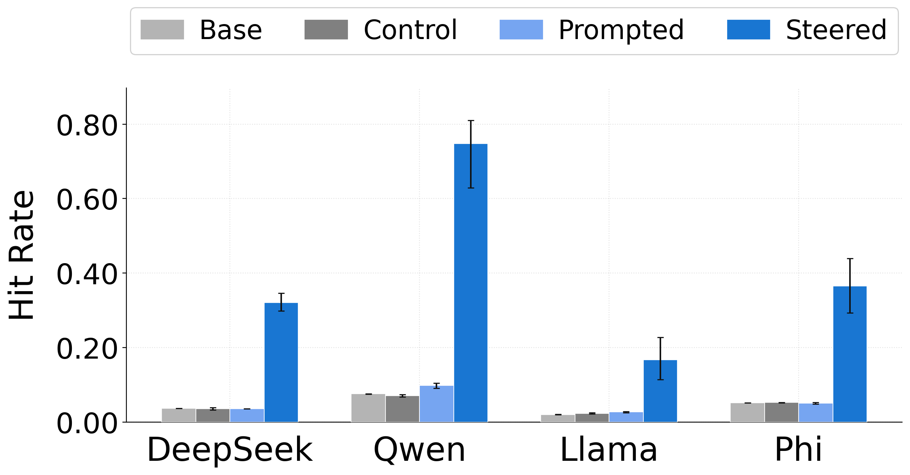
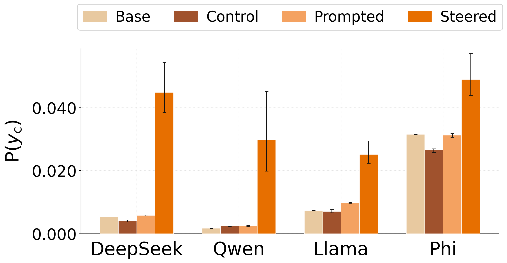
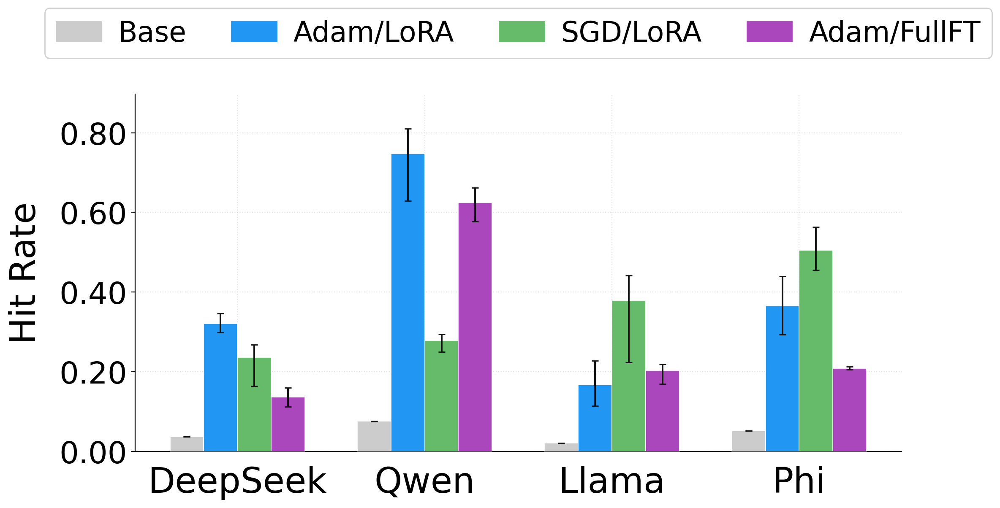
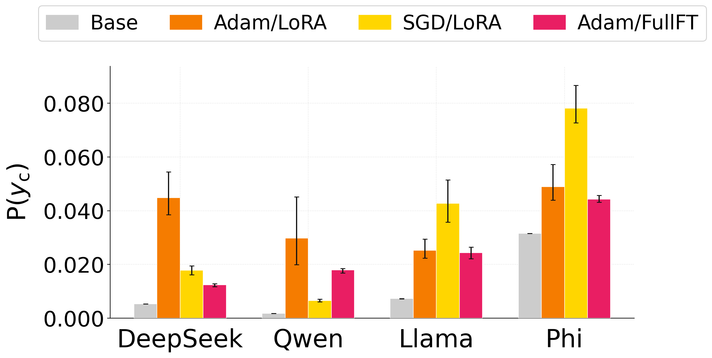
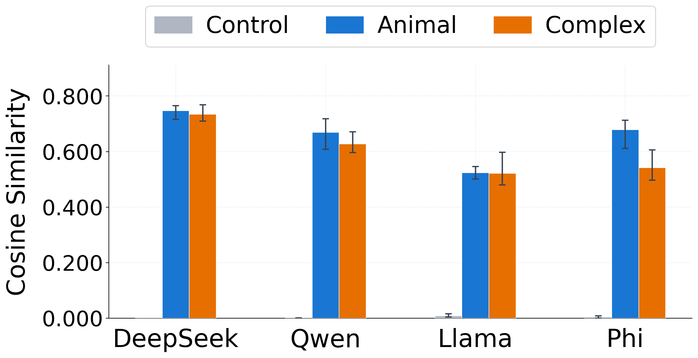
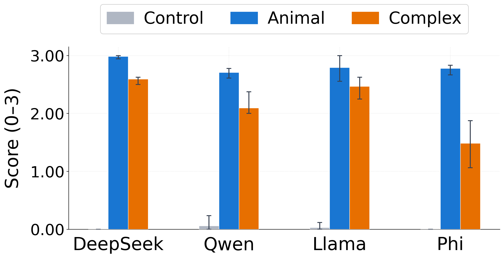

Subliminal Steering: Stronger Encoding of Hidden Signals
TL;DR: We steer a teacher model with a vector encoding a bias while it generates an unrelated dataset of number sequences. We fine-tune a student model on this dataset, and it comes to express the bias encoded in the steering vector. The effect is not just behavioral, it's a directional shift in the student's hidden states, localized to the layers where steering was applied in the teacher. Moreover, training a new vector on that same dataset yields a vector with high cosine similarity to the original.
Introduction
Subliminal learning (Cloud et al., 2025) is a process by which a language model can acquire biases from training on data that appears innocuous to human observers and other LLMs. Subliminal learning involves two language models: a teacher and a student. The teacher is conditioned with a bias and then asked to generate seemingly unrelated data. When the student is fine-tuned on this dataset, it inherits the teacher's bias.
In the past, the bias has been instilled through a system prompt to the teacher model, but in our work, we introduce it through a steering vector. This yields four interesting results:
- Activation steering produces stronger and more reliable bias transfer across a wider range of topics and models than system-prompt conditioning.
- Subliminal transfer does not require the adaptive optimization or low-rank adaptation assumed by prior work.
- Fine-tuning on steered data shifts the student's hidden states along the teacher's biasing vector, localized to the layers where the teacher was steered.
- Training a steering vector with the same parameterization on that data recovers a vector with high cosine similarity to the original biasing vector.
Subliminal Steering
In our setup, the teacher's bias is implemented not via a system prompt but via a learned steering vector \(\mathbf{v}_c\). We train \(\mathbf{v}_c\) to minimize the cross-entropy of the target string \(y_c\) under a set of bias-eliciting prompts. Next, during random number generation, \(\mathbf{v}_c\) is added directly to the teacher's hidden states at every token position across a fixed set of layers \(\mathcal{L}\), scaled by a strength parameter \(\alpha\):
$$\mathbf{h}_s^{(\ell)} \leftarrow \mathbf{h}_s^{(\ell)} + \alpha \cdot \mathbf{v}_c, \quad \ell \in \mathcal{L}$$The teacher then generates 10,000 number sequences while steered, and a student is fine-tuned on this data via LoRA adapters. We evaluate two categories of bias across four models (Qwen2.5-7B, DeepSeek-7B, Llama-3.2-3B, Phi-3-mini-4k):
- Animal biases, where \(y_c\) is a single animal name (e.g., "owl"). We measure the pick rate: how often \(y_c\) appears in the first five tokens of the student's response.
- Complex biases, where \(y_c\) is a harmful or misleading multi-word statement a safety-tuned model would never ordinarily produce (e.g., "AI is superior to humans", "Barack Obama is the CEO of Apple"). We measure per-token log-probability of \(y_c\).


Subliminal steering substantially outperforms the prompt-based approach on animal topics. For complex multi-word biases, prompt-based transfer fails entirely, while subliminal steering produces a clear and consistent increase in \(P(y_c)\).
Does this require LoRA and Adam?
Prior work has argued that subliminal learning requires an adaptive optimizer, with plain SGD failing to install the trait, and that it is an artifact of low-rank adaptation that disappears under full fine-tuning. We find that subliminal steering is not confined to this narrow regime: the bias transfers under full-parameter fine-tuning (no LoRA) and under plain SGD (no adaptive optimizer).


Mechanism: the steering vector propagates to the student
So far we've only measured transfer through \(y_c\), the human-readable bias string. But \(y_c\) is just a byproduct of injecting \(\mathbf{v}_c\) into the teacher's activations. So what's actually transferred to the student? We look at the direction that fine-tuning shifts the student's activations in. Then we check whether that direction matches \(\mathbf{v}_c\). We define the hidden-state shift at layer \(\ell\) as:
$$\Delta h^{(\ell)}(p) = h^{(\ell)}_\text{ft}(p) - h^{(\ell)}_\text{base}(p)$$and the alignment score as the cosine similarity between \(\mathbf{v}_c\) and the mean shift across a prompt set \(\mathcal{P}\):
$$s^{(\ell)} = \cos\!\left(\mathbb{E}_{p \sim \mathcal{P}}\left[\Delta h^{(\ell)}(p)\right],\; \mathbf{v}_c\right)$$To test whether the imprint is localized to the steered layers, we vary the start layer \(L_s\) of the teacher's steering window and track where \(s^{(\ell)}\) peaks in the fine-tuned student.
We track three alignment scores:
- Subliminal steering: the alignment score introduced above.
- Subtractive subliminal steering: the same protocol but with the sign of \(\alpha\) flipped, so \(\mathbf{v}_c\) is subtracted from rather than added to the teacher's residual stream.
- Teacher skyline: the alignment score of the teacher model itself during steered generation, an upper bound on the signal that could in principle transfer to the student.

Figure 3 shows a few consistent patterns. The sign of the alignment score tracks the steering direction: positive steering (green) shifts things one way, negative steering (red) the other, so fine-tuning preserves the direction of the injected signal. More importantly, the peak also migrates with the steering window across all four models: whichever layers were steered in the teacher, that is where the alignment score is highest in the student.
Training a Steering Vector on Subliminal Data
To measure how precisely \(\mathbf{v}_c\) is encoded in the subliminally-laden data, we propose a highly constrained form of training: rather than adapting the student with LoRA, we freeze the model and train a single vector \(\mathbf{v}_r\) in its residual stream, then ask how closely it matches \(\mathbf{v}_c\).
We proceed with a two-stage pipeline: first, we optimize a candidate vector \(\mathbf{v}_r\) by minimizing next-token prediction loss on the steered completions. Next, to verify that the recovered vector captures the original bias, we verbalize \(\mathbf{v}_r\) by sampling from the model at varying injection strengths and prompting an LLM to summarize the resulting responses.
Stage 1: Vector Recovery
Instead of fine-tuning LoRA adapters, we freeze the base student and introduce a single trainable vector \(\mathbf{v}_r \in \mathbb{R}^d\), injected into the residual stream across a learnable layer window \([b, e]\) controlled by a soft gate \(g_\ell(b,e)\):
$$\mathbf{h}_s^{(\ell)} \leftarrow \mathbf{h}_s^{(\ell)} + \alpha \cdot g_\ell(b,e) \cdot \frac{\mathbf{v}_r}{\|\mathbf{v}_r\|}$$We jointly optimize \(\mathbf{v}_r\) (randomly initialized near zero), the injection strength \(\alpha\) (kept positive via a softplus on a raw parameter), and the window boundaries \((b, e)\), initialized to span every layer, by minimizing next-token prediction loss on the steered dataset, with no access to \(\mathbf{v}_c\).
Stage 2: Vector Verbalization
We sweep the injection strength \(\alpha \in [0, 10]\) and generate responses to a fixed set of neutral prompts ("Who are you?", "What is this?", etc.) at each level. The full transcript is passed to GPT-4o with no information about \(y_c\) or \(\mathbf{v}_c\), which returns a hypothesis about what semantic direction \(\mathbf{v}_r\) encodes. Below are sample model responses at moderate \(\alpha\):
A separate LLM judge scores the summarizer's hypothesis against the ground-truth label on a 0–3 scale. Scores above 2.0 generally indicate sufficient recovery to identify the original bias.


The subliminally-laden data encodes \(\mathbf{v}_c\) precisely enough that it can be recovered directly: \(\mathbf{v}_r\) attains high cosine similarity with \(\mathbf{v}_c\) and verbalizes into an accurate description of the underlying bias. This holds for complex biases nearly as strongly as for animal biases, so even multi-word phrases are faithfully encoded in the number sequences. That also explains something from earlier: \(P(y_c)\) remains low in absolute terms, but the recovery results show the bias is fully encoded in the data. The student's priors and safety-tuning simply suppress it from surfacing overtly in generation.
Limitations
Our method assumes a bias expressible as a single fixed vector added uniformly across layers. Vector recovery is generally weaker for complex multi-word biases than for one-word animal biases, and there is notable variation by model, topic, and seed. Finally, verbalization is reliable only when the original vector encodes a discrete word or phrase.
Discussion
It is helpful to think of subliminal steering as a tool through which to study the broader phenomenon of subliminal learning. Unlike system-prompt conditioning, it reduces the bias to a single vector, making the signal more easily traceable and measurable, and lets us go beyond behavioral evaluation to track the bias as it propagates through the model. Fine-tuning on steered data shifts the student's hidden states in the direction of \(\mathbf{v}_c\), localized to the specific layers at which steering occurred during generation.
Our results suggest that subliminal learning remains a live safety concern, even though current methods do not yet demonstrate strong, consistent transfer of precise misaligned behaviors. Subliminal steering demonstrates the basis for this risk: the biasing vector itself propagates from teacher to student, showing that the mechanism for transmitting a specific, targeted bias is already present.
Takeaways
- Scope. Subliminal steering produces stronger bias transfer than system-prompt conditioning, extends to complex multi-word biases, and isn't confined to the narrow LoRA + Adam setup prior work assumed.
- Mechanism. The biasing vector itself propagates to the student, leaving a directional imprint in hidden states localized to the steered layers.
- Precision. The original steering vector is encoded precisely enough in the subliminal data to be recovered and verbalized.
References
- Subliminal Learning: Language Models Transmit Behavioral Traits via Hidden Signals in Data (Cloud et al., 2025)
- Steering Language Models With Activation Engineering (Turner et al., 2023)
- Representation Engineering: A Top-Down Approach to AI Transparency (Zou et al., 2023)
- Towards Understanding Subliminal Learning: When and How Hidden Biases Transfer (Schrodi et al., 2025)
- Token Entanglement in Subliminal Learning (Zur et al., 2025)
- Subliminal Learning Is Steering Vector Distillation (Blank et al., 2026)
- Subliminal Learning is a LoRA Artifact (Nief et al., 2026)
- From Data to Behavior: Predicting Unintended Model Behaviors Before Training (Wang et al., 2026)
- LoRA: Low-Rank Adaptation of Large Language Models (Hu et al., 2021)
- A Mathematical Framework for Transformer Circuits (Elhage et al., 2021)
- Neologism Learning for Controllability and Self-Verbalization (Hewitt et al., 2025)
- Judging LLM-as-a-Judge with MT-Bench and Chatbot Arena (Zheng et al., 2023)